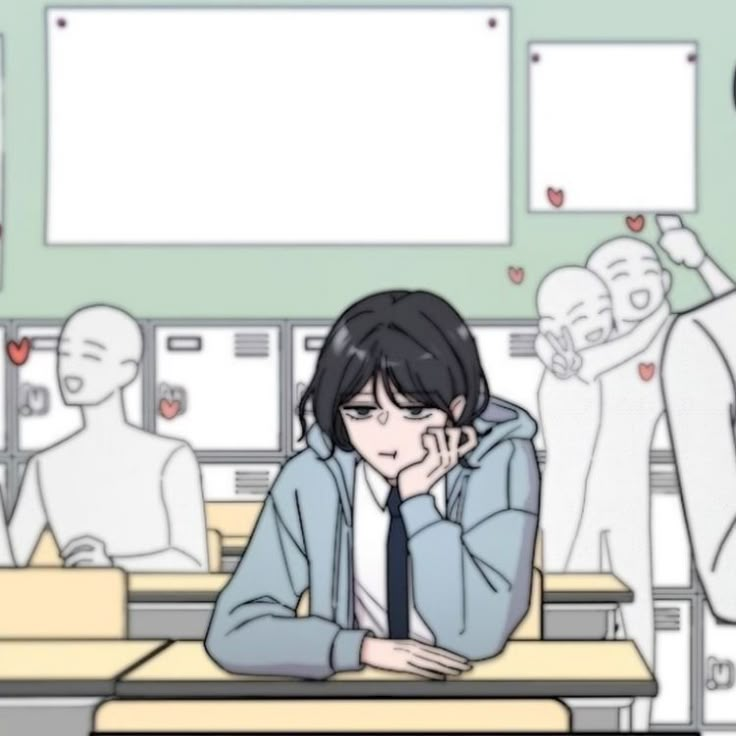
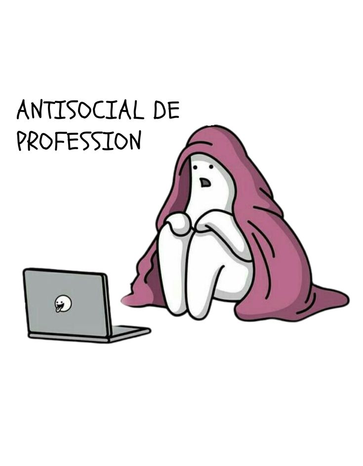
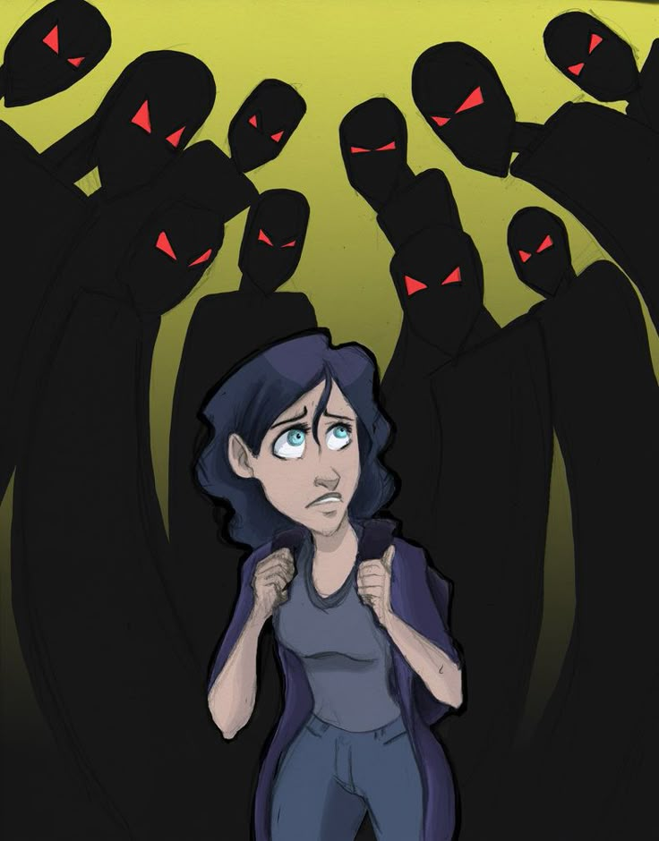

A veces me dificulta expresar ideas, opiniones o sentimientos. También otras personas piensan que soy tímida, insegura o poco participativa, aunque no siempre es así.
Es una de mis debilidades ya que no soy buena empezando o manteniendo una conversación, por esta razón, segun yo es mejor no comenzar una conversación, a veces me resulta aburrida y me siento más comoda cuando no lo hago, sim embargo que quita muchas oportunidades.

Me cuesta expresar lo que siento o pienso, en ocasiones siento inseguridad al hablar con otras personas por miedo a equivocarme o no ser comprendida. Prefiero observar y escuchar antes de participar, y aunque parezca callada, en realidad solo necesito sentir confianza.
Es una de mis debilidades ya que a veces dudo de mis capacidades y me cuesta confiar en mí misma. Muchas veces pienso demasiado antes de actuar por miedo a equivocarme o a no cumplir las expectativas de los demás. Esa inseguridad hace que me sienta nerviosa en algunas situaciones, pero también me impulsa a seguir mejorando y aprendiendo de mis errores.
